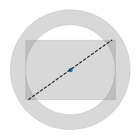
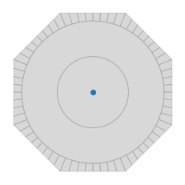
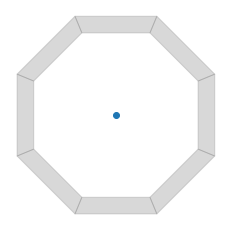
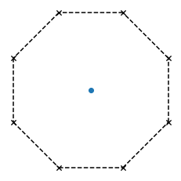
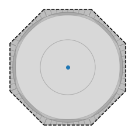
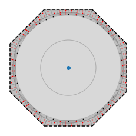
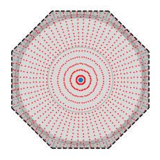

Damage Monitoring Tools
The damage monitoring toolkit consists the files SectionLib.py and get_fibers.py, and the Python package opensees. Currently these files have to be copied to the location from where they are executed, and the opensees package should be installed by running the following command:
pip install openseesThe toolkit can be used from either Tcl, Python, or directly at the command line.
The following example shows how the get_fibers.py module may be invoked from Tcl:
proc py {args} {
eval "[exec python.exe {*}$args]"
}
foreach ds {dsr1 dsr2 dsr3} {
py get_fibers.py model.json record-${ds}.txt -e 4020,3020 -d 60 -s $ds
}Note: This currently requires the
get_fibers.pyfile to be visible from the current working directory of the Tcl interpreter.
1) Geometry building {#1-geometry-building}
Damage regions are built from the same plane geometry primitives that are offered by OpenSees (e.g. the patch and layer commands).
Additionally, the function section from the module opensees.render.mpl can be used to visualize components.
from opensees import patch, layer, section
import opensees.render.mpl as renders = section.FiberSection(fibers=[
patch.circ(extRad=20, intRad=15),
layer.line(vertices=[[-14, -10], [14, 10]]),
patch.rect(vertices=[[-15, -10], [15, 10]]),
])
render.section(s);
Print section properties:
print(s.area)
print(s.ixx)
print(s.iyy)
print(s.ixy)1149.7787143782139
105902.9241215959
130902.9241215959
0.0Additionally, the SectionLib module provides convenient wrappers for building complex sections.
The Octagon function from this library can be called in 3 ways:
Octagon(radius)Constructs an octagon.Octagon(extRad, intRad)Constructs an octagonal annulusOctagon(extRad, extRad)(ie when both arguments are equal) Constructs an octagonal boundary line.
from opensees.section import PatchOctagon as Octagonrender.section(Octagon(20));
render.section(Octagon(20, 18));
render.section(Octagon(20, 20), marker="x");
2) Define damage state regions; the get_fibers module {#2-define-damage-state-regions-the-get_fibers-module}
from get_fibers import iter_elem_fibersThe get_fibers module provides the helper function iter_elem_fibers for iterating over a filtered collection of fibers. Fibers are filtered out by supplying a damage state dictionary with a required "regions" field, and optional "material" field.
from opensees.units.english import ft, inchft, inch(12.000000000000002, 1.0)Dcol = 7*ft
Rcol = Dcol/2
cover = 2*inchDS = {
# Any outermost cover fiber
"dsr1" : {
"regions": [
Octagon(Rcol, Rcol)
]
},
"dsr2" : {
"regions": [
section.FiberSection(fibers=[
patch.circ(intRad=Rcol-cover-2, extRad=Rcol-cover)
])
],
"material": "*steel*"
},
"dsr3" : {
"regions": [
# external radius internal radius
Octagon(Rcol-cover*(1-0.75), Rcol-cover*(1-0.5))
],
"material": "*concr*"
},
}3) Iterating over fibers {#3-iterating-over-fibers}
import json
import numpy as npmodel_file = "modelDetails.json"
elements = [4020]with open(model_file, "r") as f:
model = json.load(f)ds1_fibers = np.array([
f["coord"] for e,s,f in iter_elem_fibers(model, elements, filt=DS["dsr1"])
])
ds2_fibers = np.array([
f["coord"] for e,s,f in iter_elem_fibers(model, elements, filt=DS["dsr2"])
])
ds3_fibers = np.array([
f["coord"] for e,s,f in iter_elem_fibers(model, elements, filt=DS["dsr3"])
])3) Visualizing {#3-visualizing}
Patches can be superimposed for plotting purposes by adding them to a Section object like the one returned by the Octagon function. The add_patches method accepts a list of Patch objects; this list is constructed in the following cell by concatenating (+ operator) the patches attributes of each of the previously defined damage regions.
sect = Octagon(Dcol/2)
sect.add_patches(
DS["dsr1"]["regions"][0].layers +
DS["dsr2"]["regions"][0].patches +
DS["dsr3"]["regions"][0].patches
)
ax = render.section(sect)
# Create grid of points
import numpy as np
ax = render.section(sect)
# ax.scatter(*list(zip(*ds1_fibers)), color="blue", s=0.5)
ax.scatter(*list(zip(*ds2_fibers)), color="black", s=0.5)
ax.scatter(*list(zip(*ds3_fibers)), color="red", s=0.5);
If the third argument to iter_elem_fibers is omitted, all fibers are returned (Underscores are used in the following cell to name unused variables).
all_fibers = [f["coord"] for _,__,f in iter_elem_fibers(model, [4020])]
ax = render.section(sect)
ax.scatter(*list(zip(*all_fibers)), color="red", s=0.5);